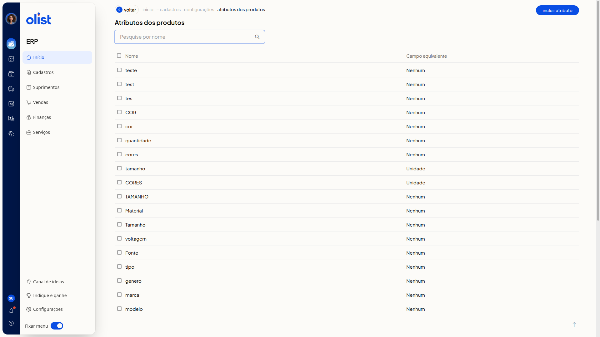
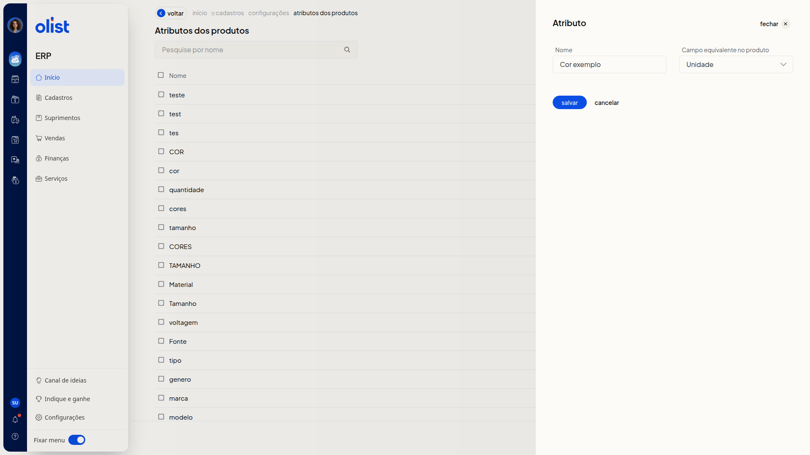

Atributos dos Produtos - Configurações
A página Atributos dos produtos do ERP da Olist serve para você consultar os atributos já cadastrados e incluir um novo atributo, com nome e campo equivalente no produto.
Como acessar
Acesse Configurações > Configurações ERP > Configurações de atributos de produtos, na seção Cadastros. A página que abre se chama Atributos dos produtos.
Pré-requisitos
Você precisa do menu Configurações disponível no ERP, porque o caminho passa por Configurações e Configurações ERP.
Atributos dos produtos
A página reúne a busca e a lista de atributos.
- O campo Pesquise por nome busca um atributo pelo nome, com o botão de pesquisa ao lado.
- O botão Incluir atributo abre o painel Atributo.
- A lista mostra as colunas Nome e Campo equivalente.

Atributo
No painel Atributo, você preenche Nome e Campo equivalente no produto. Nenhum dos dois é obrigatório.
Nome é o nome do atributo.
Campo equivalente no produto aceita somente uma destas opções:
- Nenhum
- GTIN
- Código (SKU)
- Marca
- Unidade
- Fornecedor
- Peso Bruto
- Peso Líquido
- Altura Embalagem
- Largura Embalagem
- Comprimento Embalagem
Nenhuma dessas opções exibe outro campo.
O painel traz os botões salvar, cancelar e fechar. cancelar e fechar fecham o painel sem salvar.

Links relacionados
Se precisar de ajuda com esta configuração, fale com o suporte.